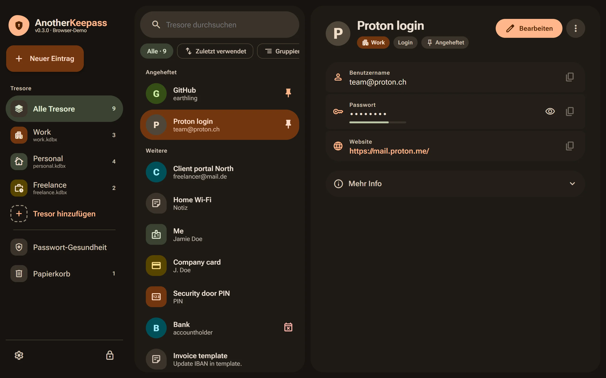

AnotherKeepass
Ein Passwortmanager für Windows und Linux, der Tresore im KeePass-Format (KDBX 4) liest und schreibt. Die Dateien bleiben mit KeePassXC, KeePass2 und KeePassDX kompatibel.
Für Smartphones gibt es keine eigene App. Deine .kdbx-Datei öffnet dort zum Beispiel KeePassDX.

Eckdaten
- Dateiformat
- KDBX 4 (lesen und schreiben). KDBX 3.1 wird gelesen und beim ersten Speichern auf KDBX 4 gehoben; das Original bleibt als
.kdbx3-backupliegen. - Kompatibel mit
- KeePassXC, KeePass2, KeePassDX und allen anderen Programmen, die KDBX 4 öffnen
- Plattformen
- Windows 10/11 (x64). Linux als AppImage (Vorschau). Kein macOS, keine Mobil-App.
- Konto / Cloud
- Nicht nötig. Tresore liegen als Dateien dort, wo du sie speicherst. Optional: Vaultwarden-Konto anbinden.
- Telemetrie
- Keine. Netzwerkzugriffe nur für Update-Prüfung, Favicons, die optionale Leck-Prüfung und Vaultwarden – jeweils abschaltbar.
- Sprachen
- Deutsch, Englisch, Französisch, Spanisch
- Technik
- Tauri 2, Rust (Tresor-Logik), React (Oberfläche), WebView2 unter Windows
- Lizenz
- GPL-3.0-or-later, Quellcode auf GitHub
Funktionen
Tresore und Einträge
- Mehrere Tresore gleichzeitig geöffnet, Suche über alle
- Farbe und Symbol pro Tresor
- Ordner (KeePass-Gruppen), Tags, angeheftete Einträge
- Eintragstypen: Login, Karte, Identität, PIN, Notiz, Sonstiges, Vorlagen
- Eigene Felder, Anhänge mit Vorschau, Ablaufdatum, Verlauf früherer Versionen
- TOTP-Einmalcodes im KeePassXC-Format
- Papierkorb (KeePass-Papierkorb), Mehrfachauswahl zum Verschieben und Löschen
- Sortieren nach letzter Nutzung, Titel, Änderungs- oder Erstelldatum; Gruppieren nach Buchstabe, Typ, Ordner, Tresor, Domain, Tag oder Datum
Passwörter
- Generator für Zeichenfolgen und Passphrasen (EFF-Wortliste)
- Stärkeanzeige mit zxcvbn, berücksichtigt die Daten des Eintrags
- Passwort-Gesundheit: schwache, mehrfach verwendete, alte und abgelaufene Passwörter
- Optional: Abgleich mit haveibeenpwned.com (k-Anonymität, das Passwort verlässt den Rechner nicht)
- Zwischenablage wird nach einstellbarer Zeit geleert und erscheint nicht im Windows-Verlauf
Anbindungen
- Browser über die Erweiterung KeePassXC-Browser, inklusive Passkeys
- Vaultwarden-Konto als Tresor öffnen oder mit einer
.kdbxsynchron halten - Import aus Bitwarden, 1Password, Proton Pass und KeePassXC (CSV)
- SSH-Schlüssel an den SSH-Agent weiterreichen (KeeAgent-kompatibel)
- KeeShare zum Teilen von Ordnern über eigene Dateien
- Auto-Type: Anmeldedaten in andere Programme eintippen
Oberfläche
- 8 Farbschemata, jeweils hell, dunkel und OLED-Schwarz (Übersicht)
- Spaltenbreiten per Ziehen anpassbar, Menü klappt zur Symbolleiste ein
- Befehlspalette (Strg K) und globaler Schnellzugriff
- Symbol im Infobereich, Start mit Windows, minimiert starten
- Schriftgröße 80–150 %, kompakte Listenansicht
Tastenkürzel
Angelehnt an KeePassXC. F1 zeigt die vollständige Liste in der App.
| Kürzel | Aktion |
|---|---|
| Strg Alt K | Schnellzugriff über jedem Programm (global). Enter kopiert das Passwort, Umschalt+Enter den Benutzernamen, Strg+Enter tippt die Anmeldung. |
| Strg K | Befehlspalette: Einträge und Aktionen suchen |
| Strg F | Suche |
| Strg N | Neuer Eintrag |
| Strg E | Eintrag bearbeiten |
| Strg B / C / T | Benutzername / Passwort / Einmalcode kopieren |
| Strg U | Website öffnen |
| Strg Umschalt V | Auto-Type für den gewählten Eintrag |
| Strg D | Eintrag duplizieren |
| Entf | In den Papierkorb |
| Strg L | Alle Tresore sperren |
Windows und Linux im Vergleich
Die Linux-Version ist eine Vorschau. Einige Funktionen hängen an Windows-Schnittstellen und fehlen dort noch.
| Funktion | Windows | Linux |
|---|---|---|
| Tresore, Einträge, Generator, Gesundheit, Import | ja | ja |
| Browser-Erweiterung (KeePassXC-Browser) | ja | ja, ungetestet |
| Auto-Type mit Fenstererkennung | ja | X11 mit xdotool, ungetestet; nicht unter Wayland |
| Sperren beim Sperren des Bildschirms | ja | über D-Bus (dbus-monitor), ungetestet |
| Windows Hello zum Entsperren | ja | – |
| Schutz vor Bildschirmaufnahmen | ja | – |
| Automatische Updates | ja | ja (AppImage) |
Designs
Acht Farbschemata, jedes mit einer hellen und einer dunklen Variante. Der OLED-Modus legt die dunkle Variante auf reines Schwarz. Einstellbar unter Einstellungen → Darstellung.
TerrakottaStandard. Erdige Töne, eigens für die App abgestimmt.
NordKühles Blaugrau aus dem Nord-Farbschema.
GruvboxWarmer Retro-Kontrast mit Orange.
SolarizedKlassisches Petrol und Creme mit Blau.
Rosé PineGedämpftes Violett mit Rosé (hell: „Dawn“).
EverforestWeiches Waldgrün, augenschonend.
Tokyo NightNachtblau mit leuchtendem Blau (hell: „Day“).
DraculaDunkelgrau mit Violett und Pink (hell: „Alucard“).
Vereinfachte Vorschau aus denselben Farbwerten wie in der App. Die Schemata gehen auf die gleichnamigen freien Farbpaletten zurück.
Sicherheit
- Verschlüsselung
- Die von KDBX 4: AES-256 oder ChaCha20, Schlüsselableitung mit Argon2 oder AES-KDF. Die App warnt bei schwachen Ableitungs-Einstellungen. Master-Passwort, optional Schlüsseldatei.
- Trennung
- Der geöffnete Tresor liegt im Rust-Prozess. Die Oberfläche erhält ein Passwort nur, wenn du es anzeigst, kopierst oder bearbeitest.
- Sperren
- Beim Sperren werden Schlüssel und geschützte Werte im Speicher überschrieben. Automatisch bei Inaktivität, Bildschirmsperre oder Benutzerwechsel (einstellbar).
- Härtung
- Andere Prozesse des Benutzers können den Speicher der App nicht auslesen. Browser- und SSH-Verbindung sind nur für den eigenen Benutzer erreichbar. Kontodaten für Vaultwarden schützt Windows DPAPI.
- Gespeichert wird nie
- Das Master-Passwort. Für das Entsperren mit Windows Hello bleibt nach dem Sperren nur ein Schlüssel im Arbeitsspeicher, nicht auf der Festplatte; Schließen eines Tresors verwirft ihn.
- Updates
- Nur Pakete mit der Signatur des Projekts werden installiert. Releases baut GitHub Actions aus dem getaggten Quellstand.
- Grenzen
- Was gerade auf dem Bildschirm steht, liegt auch im Speicher der Oberfläche. Die Windows-Version ist noch nicht code-signiert. Es gab noch kein externes Sicherheitsaudit.
Download
Neueste Version auf GitHubOhne Konto und ohne Registrierung. Die installierte App prüft selbst auf neue Versionen (abschaltbar).
Windows64-Bit (x64)
Installer mit Startmenü-Eintrag und automatischen Updates. Benötigt die WebView2-Laufzeit, die bei Windows 11 bereits dabei ist.
Installer (.exe)von GitHubLinux64-Bit, AppImage
Vorschau
Gebaut auf Ubuntu 22.04, sollte auf den meisten aktuellen Distributionen laufen, ist aber wenig getestet. Einschränkungen siehe Vergleich oben.
macOSnicht verfügbar
Es gibt derzeit keine Builds für macOS.
Bekannte Hinweise
- Weil der Installer noch nicht code-signiert ist, warnt Windows SmartScreen vor einem unbekannten Herausgeber.
- Microsoft Defender meldet frische, unsignierte Builds gelegentlich fälschlich.
- Beim Update von 0.1.0: einmal von Hand deinstallieren, App-Daten behalten.
Selbst bauen
Voraussetzungen: Node.js, Rust und die Tauri-Abhängigkeiten.
git clone https://github.com/bohannjein/AnotherKeepass.git
cd AnotherKeepass && npm ci
npx tauri buildDokumentation
Installation, Einrichtung und Fehlerbehebung.
- Installieren und aktualisierenWindows, Linux, automatische Updates
- Erster StartTresor öffnen oder neu anlegen
- Browser verbindenKeePassXC-Browser einrichten
- Von einem anderen Manager umziehenBitwarden, 1Password, Proton Pass, Vaultwarden
- Wie Daten in der Datei liegenZuordnung zu KDBX
- FehlerbehebungWarnungen, Defender, KeePassXC parallel